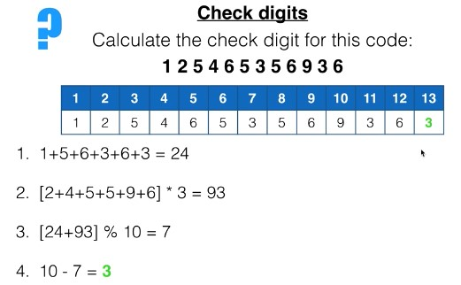

Send Data
The original data is sent from one device to another.
Errors can occur when data is transmitted, so error detection methods help identify corrupted or incorrect data.
Error detection checks transmitted data to identify whether it has been corrupted.
The original data is sent from one device to another.
The receiving device checks the data for possible errors.
If the data does not match the expected result, an error is detected.
A parity check adds an extra bit to data to help detect errors during transmission. For example, this even parity below adds a 0 since the number of 1 is even, then the digit 0 is added to the data. Then, after the data is transmitted, it checks again if the number of 1s is still even or not, and if it is odd, then it is corrupted. It works vice-versa for even and odd parity, except for odd parity, the extra digit is 1.
Data with parity bit
↓
Received data
Error Detected
Echo check verifies data by sending the received data back to the sender for comparison.
Sender
Receiver
10110100
10110100
Original: 10110100
Echo: 10110100
✓ Data matches, No error detected
In an echo check, the receiver sends the received data back to the sender. The sender compares the echoed data with the original data. If the two values are different, an error has occurred during transmission.
A checksum detects errors by calculating a value from the data and comparing it with the value received.
Sender
101101
Checksum
101101, checksum
Receiver
Receiver
101101, checksumvalue
Checksum
The sender calculates a checksum from the original data and sends it together with the data. The receiver calculates the checksum again using the received data.
Original: 101101
Received: 101101
Checksums do not match, Error Detected
In this example, one bit changed during transmission. Because the received data is different, its calculated checksum will also be different from the original checksum. The receiver can therefore detect that the data was corrupted.
A check digit is used to check whether entered data is correct.

This is an example of EAN-13 Check DigitA check digit is calculated from the original data before it is entered.
The data is entered, such as when a barcode is scanned.
A new check digit is calculated from the data that was entered.
The new check digit is compared with the stored check digit. If they match, the data is accepted. If they do not match, an error is detected.
Automatic Repeat reQuest is an error-control method that ensures data is transmitted correctly. The receiver sends an acknowledgement message known as ACK when the packet bypasses all of other error detection checks. It acts as like a confirmation message, and the sender waits. If the ACK isn't received to the sender yet after the timeout, the sender assumes that the packet was lost or corrupted, which then the sender will retransmits it.
Sender
Receiver
The sender sends a packet and waits for an ACK. If the ACK does not arrive before the timeout, the sender retransmits the packet.
{kind=link}